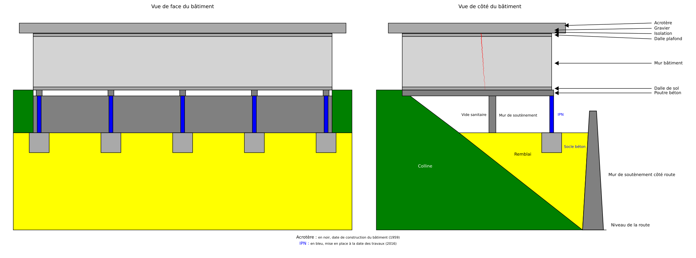

Replay public · mesures de fissures
Observer sans confondre
Un suivi structurel anonymisé, reconstruit à partir d’artefacts publics expurgés. Les observations, leurs protocoles et leurs unités restent séparés lorsque leur continuité scientifique n’est pas démontrée.
- Données réelles publiées
- Aucune interpolation
- Limites visibles
01 · Repérage
Une géométrie commune, deux élévations
La figure vectorielle conserve le repère métrique et les statuts de validation documentés. Elle situe le contexte sans produire de diagnostic structurel.

Vue d’ensemble de la géométrie acceptée, expurgée des éléments hors périmètre de ce replay.
Examiner la géométrie en détail
La zone suivante se parcourt horizontalement au clavier ou au toucher.
02 · Observations
Trois séries, trois contextes conservés
Chaque point correspond à une valeur source. Les observations ne sont ni reliées, ni lissées, ni converties pour suggérer une continuité qui n’est pas établie.
03 · Traçabilité
Des transformations vérifiables
Le replay relie ses données minimales au manifeste public et rend explicites les contrôles qui empêchent les rapprochements non validés.
Contrôles de qualité
Chaîne déterministe
04 · Portée scientifique
Ce que ce replay ne conclut pas
Une tendance observée n’est pas une causalité. Ce support ne conclut ni sur la stabilité, ni sur la sécurité, ni sur l’état structurel du bâtiment.
La météo est acquise mais non jointe aux fissures. L’offset source
+0800 n’est validé que pour la fenêtre expérimentale du 25 au
26 août 2026 ; l’historique reste TO_CONFIRM.